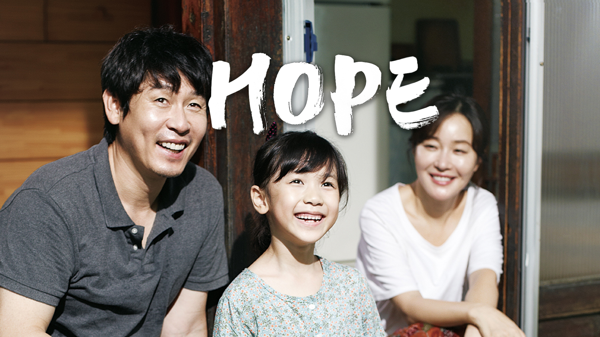
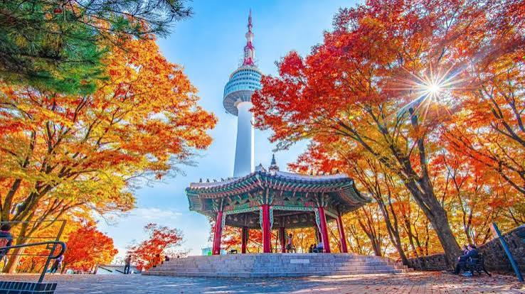
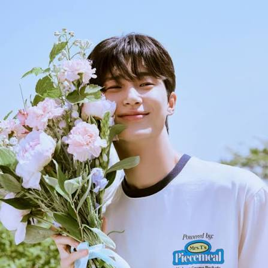
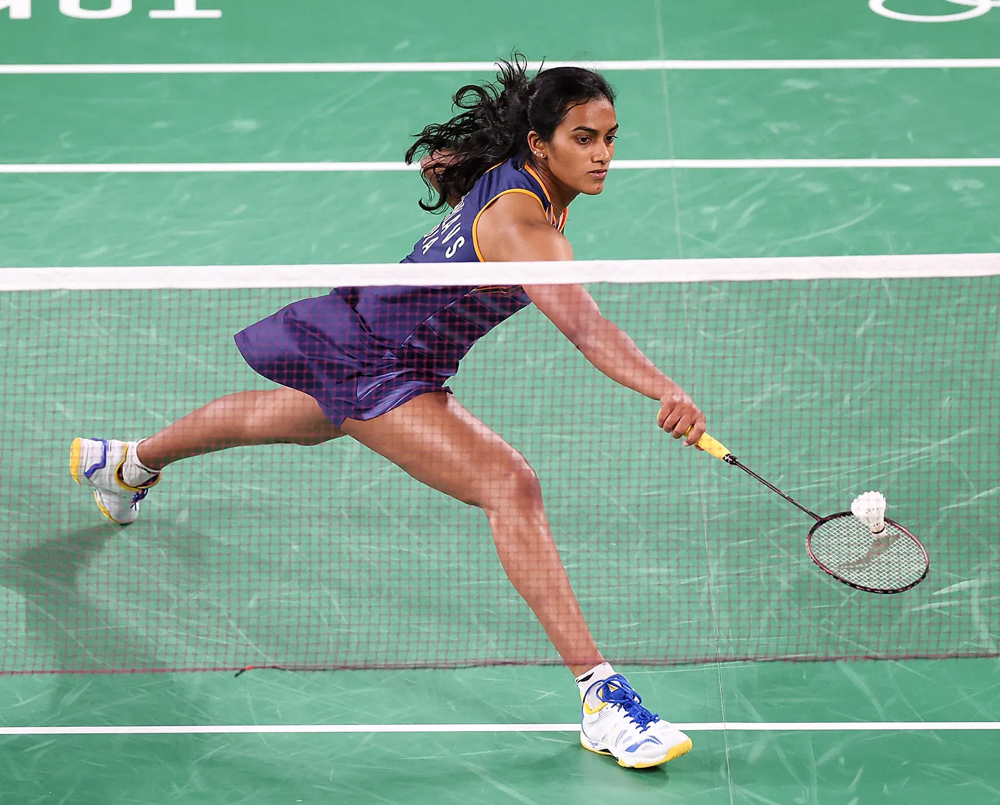
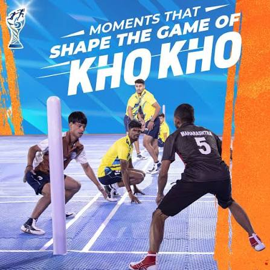

Favorite Food


Biryani
Biryani is widely considered a masterpiece of the culinary world, loved for its perfect balance of aromatic basmati rice, rich spices, and tender meat or vegetables. It is truly an elite choice for a favorite food!
Spaghetti
Spaghetti is an absolute classic, and it is easy to see why it is your favorite food! Whether it is the satisfying feeling of twirling the long strands on your fork or how beautifully they hold onto rich sauces, spaghetti is the ultimate comfort meal. It is incredibly versatile, simple to cook, and universally loved.
Favorite Movie


HOPE
Hope (2013 / So-won): If you mean the South Korean drama directed by Lee Joon-ik, you have a massive appreciation for heavy, emotionally gripping storytelling. This heartbreaking but ultimately inspiring true story follows a family helping their young daughter heal after a brutal tragedy.
HI NANNA
Hi Nanna is a critically acclaimed 2023 Telugu-language romantic family drama. Directed by debutant Shouryuv, the film stars Nani, Mrunal Thakur, and Kiara Khanna in lead roles. It tells a deeply emotional story centered on the bond between a single father and his young daughter.
Favorite Place

Bangkok
Bangkok, the capital of Thailand, is a vibrant metropolis famous for its ornate shrines, intense street life, and dynamic food scene. Locally known as Krung Thep Maha Nakhon, it sits on the delta of the Chao Phraya River and stands as one of the world's most popular travel destinations.
Seoul
Seoul | History, Population, Climate, Map, & Facts | BritannicaSeoul is famous for its seamless blend of futuristic urban innovation and ancient tradition, its dominance in global pop culture (K-Pop and K-Dramas), world-class skincare and fashion trends, and a bustling 24-hour street food and nightlife scene.
Favorite Actor


Phuwin Tangsakyuen
Phuwin Tangsakyuen is a prominent Thai actor and singer under GMMTV who rose to international fame through his breakthrough lead role in the 2021 series .Beyond his on-screen success, Phuwin is a talented vocalist who contributes frequently to television soundtracks under Riser Music, a multi-lingual talent studying Information and Communication Engineering at Chulalongkorn University, and the official voice actor for the character Lifeweaver in the global video game Overwatch 2.
Byeon Woo-seok
Byeon Woo-seok is a prominent South Korean model and actor who achieved massive global breakout stardom for his role as Ryu Sun-jae in the hit 2024 time-slip romance drama Lovely Runner. Born on October 31, 1991, the 189 cm tall star initially began his career on fashion runways before making his acting debut in the 2016 television series Dear My Friends
Favorite Sport


Badminton
Badminton is a high-speed racket sport played on a rectangular court where players score points by striking a feathered or nylon shuttlecock over a net so that it lands within the opponent's boundary lines. Played in either singles (one against one) or doubles (two against two) formats, the game follows a best-of-three structure where the first side to reach 21 points wins a set.
Kho Kho
Kho Kho is a fast-paced, traditional Indian tag sport played on a rectangular court between two teams of 15 players, with 9 taking the field at a time. The game centers on a unique chasing dynamic where eight players from the attacking team sit in a central lane facing alternate directions, while a ninth active chaser sprints to tag three defenders who enter the court in batches.